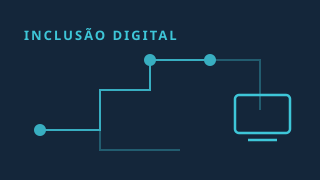
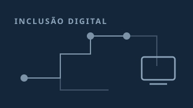

Grupo Encantado de Comunicação
COMUI promove curso de inclusão digital para idosos em Roca Sales
COMUI promove curso de inclusão digital para idosos em Roca Sales Grupo Encantado de Comunicação
Edição nº 79 · 9 de outubro de 2026 · 10 matérias
Grupo Encantado de Comunicação
COMUI promove curso de inclusão digital para idosos em Roca Sales Grupo Encantado de Comunicação

Vietnam.vn
A Frente da Pátria do Vietnã lançará o "Movimento de Alfabetização Digital" em 2026. Vietnam.vn

Vietnam.vn
A Frente da Pátria do Vietnã está lançando o "Movimento de Alfabetização Digital": Organizando o Dia da Frente Digital em conjunto com o Dia da Unidade Nacional…

TI INSIDE Online
Letramento digital, literacia e IA: usar sem deixar de pensar TI INSIDE Online

MZNews
Moçambique consolida iniciativas de inclusão digital com a estratégia “Internet Para Todos” MZNews

TeleSíntese
MCom: Brasil precisa ampliar competências digitais para transformar acesso à internet em oportunidades TeleSíntese

Capital Digital
Governo incentiva reaproveitamento de computadores públicos para ampliar inclusão digital Capital Digital
Capital Digital
Acesso à internet chega a 84% dos lares brasileiros, mas desigualdade digital ainda é desafio Capital Digital

UFPI
CACOM/PRAEC divulga o FAQ com perguntas frequentes do processo de seleção do Auxílio Inclusão Digital (AID II) - Edital Nº 26/2026 PRAEC UFPI UFPI